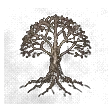

Weiße Felsen
Steil aus dem Meer aufragende Kalksteinklippen, die Skovos über Jahrhunderte vor unerwünschten Besuchern abgeschirmt haben.

Die Welt · Region 07 · Westliche InselnWeiße Felsen, dunkles Meer und monumentale Heiligtümer bewahren die Mythen einer Inselwelt, die lange im Verborgenen lag. Die Inseln verbinden klassische Monumente mit bedrohlicher Wildnis – alte Schwüre und vergessene Mächte reichen hier bis in die Gegenwart.
Die Inseln gehören zu den ältesten bewohnten Gebieten Sanktuarios. Nach heutiger Diablo-Lore befand sich hier eine der frühesten Zivilisationen der Nephalem – und Skovos ist eng mit Lilith und Inarius sowie den Ursprüngen der Menschheit verbunden. Die heutigen Bewohner, die Askari, entwickelten daraus eine eigene Gesellschaft, deren bedeutendste Traditionen von den Amazonen und den Orakeln geprägt werden.
Skovos besteht aus sehr unterschiedlichen Landschaften: vulkanische Gebiete im Westen, dichte Wälder im Osten und versunkene Regionen dazwischen. Die Hauptstadt Temis bewahrt in ihren marmornen Bauten Bilder und Erinnerungen aus den frühesten Epochen Sanktuarios. Blizzard beschreibt die Region deshalb ausdrücklich als Ort, an dem sich viele der ältesten Geheimnisse über die Askari, die Großen Übel und die frühen Kriege finden lassen.

Steil aus dem Meer aufragende Kalksteinklippen, die Skovos über Jahrhunderte vor unerwünschten Besuchern abgeschirmt haben.
Kolossale, teils in Fels gehauene Bauwerke einer religiösen Tradition abseits Kehjistans oder Nahantus.
Nur wenigen bekannte Ankerplätze, über die die Inseln vorsichtig wieder Kontakt zum Festland aufnehmen.
Skovos gilt als Heimat straff organisierter Kriegerinnen-Orden, deren Disziplin und Kampfkunst legendär sind. Über Generationen hielten sie die Inseln bewusst isoliert – ein Schutz, der zugleich viel über ihre Herkunft und ihre Feinde verrät.
Rund um die Klippen und in den Tempelanlagen kursieren Berichte über uralte Wächter und Meeresungeheuer, die die heiligen Stätten der Inseln bis heute bewachen sollen.
Lange galt Skovos als abgeschnitten vom Rest Sanktuarios – ein weißer Fleck selbst auf den Karten der Horadrim.
Erst in jüngerer Zeit öffnet sich die Inselwelt wieder gegenüber dem Festland – vorsichtig, über verborgene Buchten und wenige vertraute Wege.
Mit der Öffnung treten alte Schwüre und Geheimnisse zutage, die lange sicher verwahrt schienen – und die Sanktuario noch beschäftigen dürften.